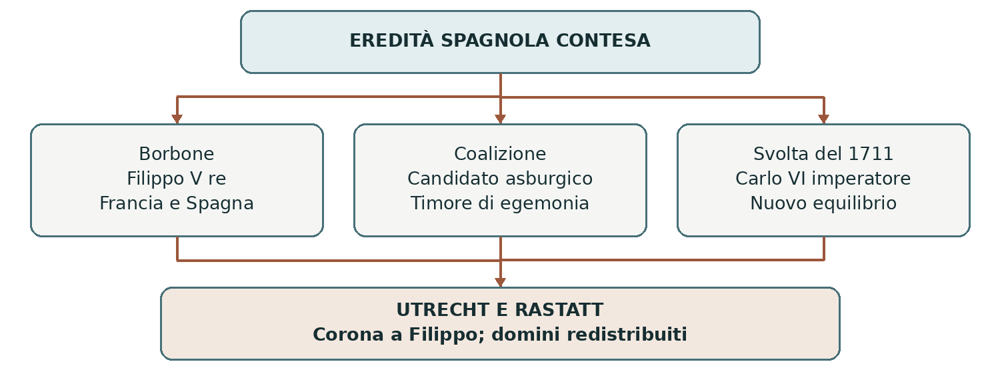

1700–1714 • Monarchie, equilibrio e commerci
La guerra di successione spagnola
La morte di un re senza eredi aprì una contesa che coinvolse gran parte dell’Europa e raggiunse gli oceani. La posta in gioco era l’eredità della monarchia spagnola: territori europei, possedimenti americani e accesso ai commerci coloniali.
0. Domanda generatrice
Perché la scelta del re di Spagna diventò una questione europea?
In sintesi La successione minacciava di concentrare una potenza enorme nelle mani di una sola dinastia.
1. Il mondo precedente
Alla fine del Seicento la Spagna aveva perso parte della sua precedente supremazia, ma governava ancora
un vasto insieme di territori. Alla penisola iberica e alle colonie americane si aggiungevano i Paesi Bassi
spagnoli e importanti domini italiani. Carlo II d’Asburgo non aveva figli: la sua morte avrebbe posto il
problema di chi dovesse ereditare questa monarchia composita.
La Francia di Luigi XIV aveva esteso la propria influenza attraverso guerre e una politica dinastica
ambiziosa. Inghilterra e Province Unite temevano una potenza capace di dominare il continente e di
limitarne il commercio. L’Austria, retta dall’altro ramo degli Asburgo, rivendicava a sua volta diritti
sull’eredità spagnola.
In sintesi La crisi dinastica si inserì nella rivalità tra i Borbone francesi, gli Asburgo austriaci e le potenze marittime.
2. Le fratture
Nel 1700 Carlo II morì. Il suo testamento designava erede Filippo d’Angiò, nipote di Luigi XIV, a
condizione che le corone di Francia e Spagna restassero separate. Filippo salì al trono come Filippo V. La
possibilità di una stretta collaborazione tra le due monarchie borboniche apparve comunque minacciosa
agli avversari della Francia.
Nel 1701 si formò una coalizione contro l’espansione borbonica, che sostenne come candidato l’arciduca
Carlo d’Asburgo. La guerra non riguardava soltanto la legittimità di un erede: contavano le frontiere, le
basi navali, i mercati e il principio dell’equilibrio, cioè la volontà di impedire a una potenza di prevalere
su tutte le altre.
In sintesi Il testamento di Carlo II innescò il conflitto; la paura dell’egemonia franco-spagnola lo trasformò in guerra internazionale.
3. Attori, gruppi e conflitti
Le alleanze non rimasero immobili. Il duca di Savoia e il Portogallo entrarono nella coalizione antiborbonica nel 1703.
| Attori | Obiettivi e interessi |
|---|---|
| Francia e Filippo V | Difendere la successione borbonica e la collaborazione tra le due monarchie. |
| Austria e Carlo d’Asburgo | Ottenere la corona spagnola e accrescere i domini asburgici. |
| Inghilterra e Province Unite | Contenere la Francia; tutelare sicurezza, navigazione e scambi. Dal 1707 l’Inghilterra fa parte della Gran Bretagna. |
| Savoia e Portogallo | Rafforzare la propria posizione attraverso l’alleanza e le compensazioni territoriali. |
In sintesi Rivendicazioni dinastiche e interessi strategici spiegano insieme la formazione degli schieramenti.
4. Il processo storico
Una guerra su più fronti
Tra il 1701 e il 1714 si combatté nei Paesi Bassi, in Germania, in Italia e nella penisola iberica, oltre che
sui mari. Gli eserciti della coalizione, guidati fra gli altri dal duca di Marlborough e da Eugenio di Savoia,
ottennero importanti successi. La vittoria di Blenheim nel 1704 frenò la minaccia franco-bavarese
nell’Europa centrale; quella di Torino nel 1706 contribuì a far perdere ai francesi il controllo dell’Italia
settentrionale.
In Spagna, però, Filippo V conservò un ampio sostegno. Le diverse regioni non si schierarono tutte allo stesso modo e il conflitto assunse anche caratteri interni. Le vittorie militari della coalizione non bastavano dunque a imporre un nuovo sovrano all’intera monarchia.
1711: cambia il rischio per l’equilibrio
Nel 1711 morì l’imperatore Giuseppe I. Suo fratello, proprio il pretendente alla corona spagnola, gli
succedette come Carlo VI. Se avesse ottenuto anche la Spagna, avrebbe riunito una parte imponente
dell’eredità degli Asburgo. Per le potenze marittime una simile concentrazione poteva risultare pericolosa
quanto quella borbonica.
Questa novità, insieme ai costi della guerra e ai cambiamenti politici britannici, favorì i negoziati. La ricerca di un equilibrio prevalse sull’obiettivo iniziale di togliere a Filippo V la corona.
Le paci e la nuova carta politica
Le paci di Utrecht del 1713 e di Rastatt del 1714 definirono il nuovo equilibrio. A Utrecht Filippo V fu
riconosciuto re di Spagna, con la rinuncia ai diritti sulla corona francese. La Spagna conservò i domini
americani, ma perse gran parte dei possedimenti europei: all’Austria andarono i Paesi Bassi spagnoli,
Milano, Napoli e la Sardegna; ai Savoia la Sicilia, con il titolo regio. Nel 1720 i Savoia avrebbero
scambiato la Sicilia con la Sardegna, passata loro dall’Austria.
La Gran Bretagna ottenne dalla Spagna Gibilterra e Minorca, e dalla Francia Acadia, Terranova e
territori della baia di Hudson. Acquisì inoltre l’asiento: un contratto privilegiato per fornire persone
africane schiavizzate alle colonie spagnole. Era un diritto commerciale circoscritto, non il monopolio
mondiale della tratta.
In sintesi La guerra impedì l’unione delle corone borboniche e redistribuì domini e vantaggi commerciali.
Lo snodo decisivo
Il 1711 mostra il funzionamento dell’equilibrio europeo: gli alleati potevano cambiare obiettivo quando la vittoria del proprio candidato rischiava di renderlo troppo potente.
5. Le fonti in dialogo
Utrecht: un trattato è anche un progetto di ordine
Il trattato tra Spagna e Gran Bretagna del 1713 è una fonte diplomatica: registra gli accordi riconosciuti dai due sovrani. Qui ne leggiamo una sintesi, non una citazione.
Contenuto — sintesi didattica: Le rinunce dinastiche mirano a separare le corone; altre clausole regolano la cessione di Gibilterra e Minorca e l’accesso britannico al commercio con l’America spagnola, compreso l’asiento.
Interpretazione e limiti: Le formule di pace e amicizia esprimono il punto di vista dei governi. Non descrivono le sofferenze dei civili né danno voce alle persone schiavizzate trattate come oggetto di contratti commerciali.
Domanda di lettura: Quali clausole riguardano la sicurezza europea e quali l’espansione commerciale?
Fonte: trattato anglo-spagnolo di Utrecht, 1713 (testo inglese)
In sintesi I trattati collegano successioni, territori e commerci; il loro linguaggio riflette gli interessi dei vincitori e dei negoziatori.
6. Conseguenze e nuovo assetto
In Italia si affermò una preponderanza austriaca, mentre i Savoia ottennero un titolo regio. La Spagna
restò una grande monarchia coloniale sotto una nuova dinastia; la Francia non riuscì a imporre la propria
egemonia.
La Gran Bretagna rafforzò il controllo delle rotte e la penetrazione nei mercati coloniali. L’equilibrio europeo non eliminava la guerra: offriva un criterio per limitare la concentrazione di potere, anche attraverso compensazioni territoriali.
In sintesi Austria e Gran Bretagna accrebbero il loro peso; i territori italiani furono parte centrale del compromesso.
7. Conclusione
Una disputa ereditaria diventò europea perché l’eredità spagnola modificava i rapporti di forza. La pace separò la questione del sovrano da quella dei territori: Filippo conservò la corona, ma la monarchia perse numerosi domini.
Sintesi finale 1700: Carlo II lascia la corona a Filippo d’Angiò. 1701: una coalizione contrasta la potenza borbonica. 1711: Carlo d’Asburgo diventa imperatore; cambia l’equilibrio. 1713–1714: Utrecht e Rastatt ridistribuiscono domini e diritti. La Spagna resta borbonica; crescono Austria e Gran Bretagna.
Per studiare e collegare
Coordinate essenziali
Europa occidentale e centrale; Mediterraneo; Atlantico. Dalla morte di Carlo II (1700) alle paci del 1713– 1714, con il successivo scambio insulare del 1720.
Saperi irrinunciabili
1. Carlo II di Spagna morì senza figli nel 1700.
2. Il suo erede fu Filippo d’Angiò, divenuto Filippo V.
3. Gli avversari temevano l’egemonia franco-spagnola.
4. La coalizione sostenne Carlo d’Asburgo.
5. La guerra durò dal 1701 al 1714.
6. Nel 1711 Carlo divenne imperatore come Carlo VI.
7. Utrecht e Rastatt separarono le corone di Francia e Spagna.
8. L’Austria acquisì importanti domini in Italia e nei Paesi Bassi.
9. I Savoia ottennero la Sicilia nel 1713 e la Sardegna nel 1720.
10. La Gran Bretagna rafforzò basi navali e commerci coloniali.
Mappa concettuale

La soluzione conserva il sovrano borbonico ma riduce la concentrazione territoriale e dinastica.
Strumenti e attività
Linea del tempo ragionata
| Quando | Che cosa cambia |
|---|---|
| 1700 | Morte di Carlo II; Filippo V diventa re. |
| 1701 | Coalizione antiborbonica e inizio della guerra. |
| 1704 / 1706 | Blenheim e Torino frenano l’espansione francese. |
| 1711 | Carlo diventa imperatore: cambia la convenienza degli alleati. |
| 1713–1714 | Utrecht e Rastatt definiscono la pace. |
| 1720 | Scambio tra Sicilia e Sardegna: i Savoia regnano in Sardegna. |
Vocabolario essenziale
Equilibrio. Politica volta a impedire il predominio di una sola potenza.
Successione. Trasmissione di una corona o di un patrimonio dinastico.
Rinuncia dinastica. Abbandono formalizzato di diritti su un trono.
Asiento. Contratto; in questo contesto, privilegio per la tratta verso l’America spagnola.
Attività di comprensione
1. Spiega perché nel 1711 gli interessi delle potenze marittime cambiarono.
2. Dividi i risultati della pace in tre gruppi: dinastici, territoriali, commerciali.
3. Confronta l’Italia prima e dopo la guerra: quali potenze vi guadagnarono influenza?
Fonti e approfondimenti
Lezione di riferimento: «moderna.ppt», diapositiva 13. I collegamenti seguenti permettono di leggere la fonte e approfondire i passaggi centrali.
National Army Museum — War of the Spanish Succession
CSIC — Studio sul contratto di asiento del 1713